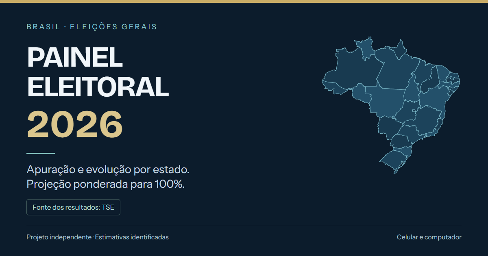

ACESSO PELO CELULAR E COMPUTADOR
Acompanhe as Eleições 2026
Apuração oficial do TSE, percentual total e por estado, gráficos temporais e estimativa ponderada para 100%.
Projeto independente, sem vínculo com a Justiça Eleitoral. Resultados oficiais, estimativas e simulações são identificados separadamente. A apuração consulta a fonte a cada 60 segundos enquanto o painel está aberto.